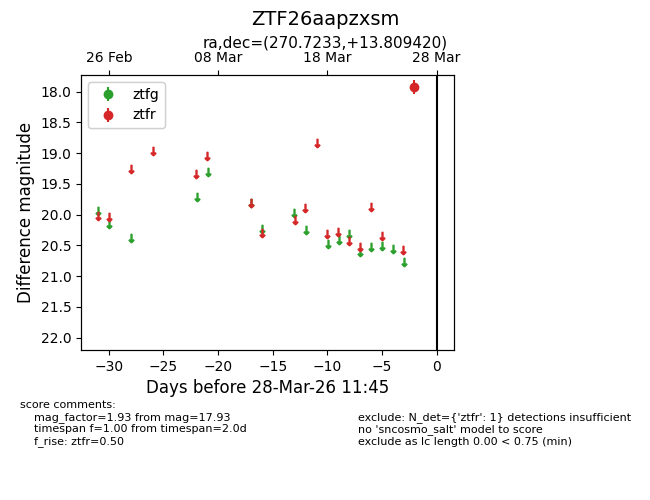
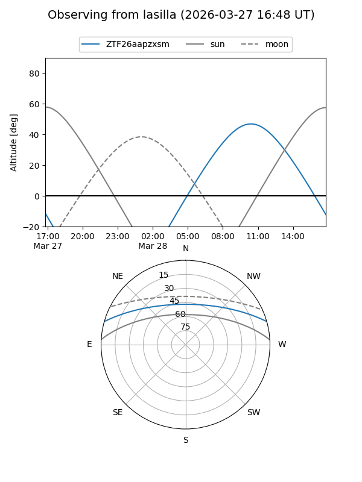
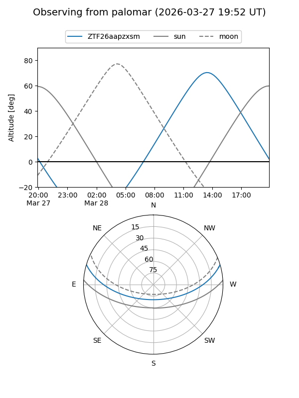

ZTF26aapzxsm
Target ZTF26aapzxsm at 2026-03-28 11:48
Aliases and brokers:
FINK: link
Lasair: link
ALeRCE: link
alt names
ZTF26aapzxsm (ztf,fink_ztf)
Coordinates:
equatorial (ra, dec) = 270.7233,+13.80942
equatorial (HMS+DMS) = 18:02:53.59,+13:48:33.91
galactic (l, b) = (40.0966,+16.89024)
Flags:
Photometry:
last ztfr=17.93
1 ztfr detections
Lightcurve

Visibility


Additional plots